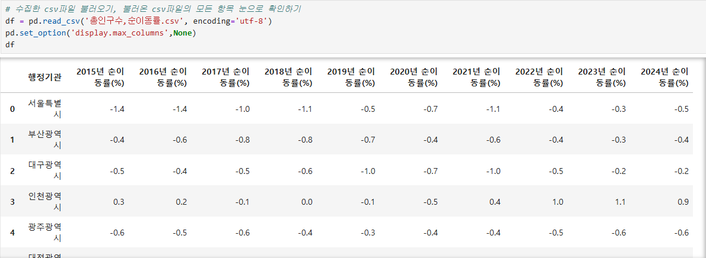
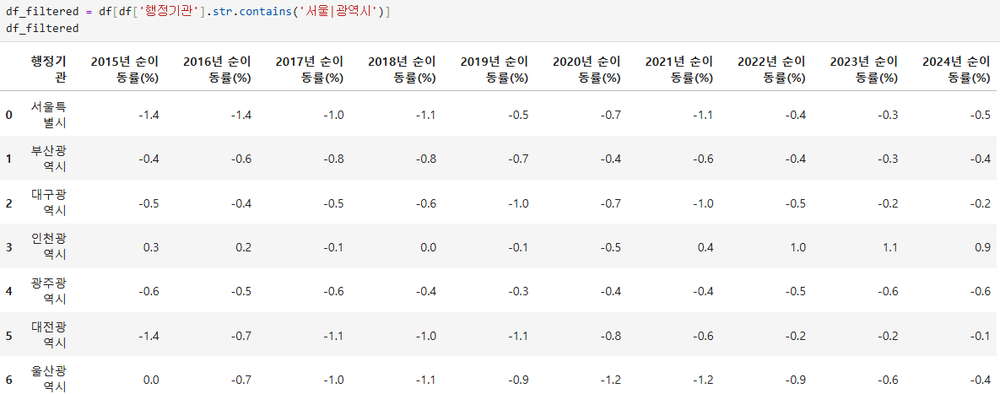
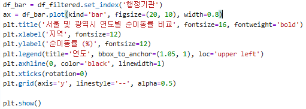

데이터 전처리 과정 - 순이동률(%)
1. 활용할 데이터에 대한 파악
수집한 데이터의 파일(csv) 불러와서 유의미/무의미한 데이터 확인 
2. 무의미한 데이터 제거
서울과 광역시라는 단어가 포함된 행만 가져오기 
3. 제거 후 남은 유의미 데이터들을 시각화 하기
제거 후 남은 서울과 광역시들의 연도별 순이동률 (%)를 bar chart로 시각화하기 
4. 시각화 된 데이터들의 이미지파일로 변환
시각화 된 차트들을 이미지 파일로 저장